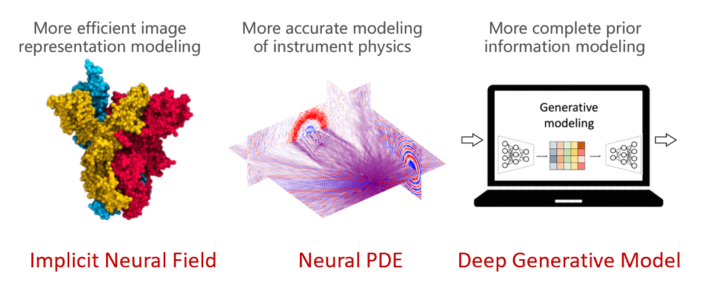
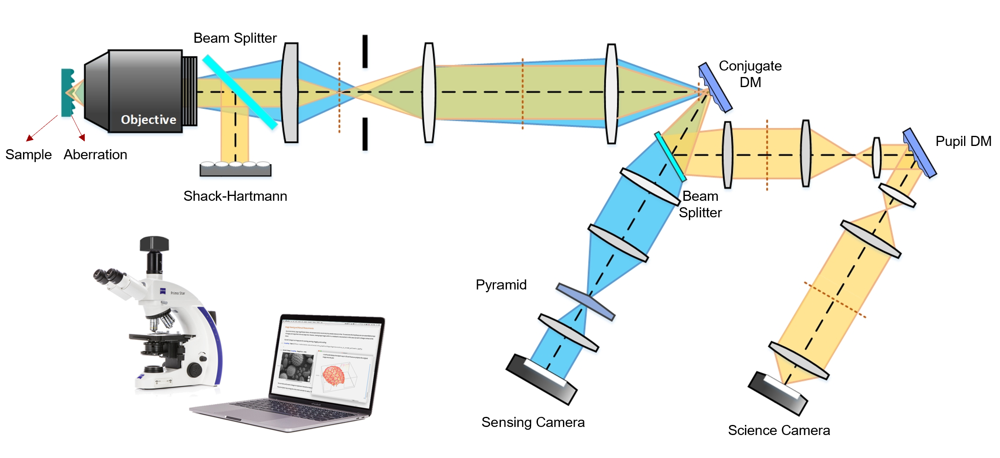

Research
Imaging has revealed great discoveries in many scientific fields, such as astronomy, biomedicine, and material science. In turn, these discoveries also motivated new scientific goals that require imaging in extreme conditions, such as extreme time scales and extreme resolutions. Our research focuses on computational imaging for science, which leverages the innovative co-design of hardware and algorithms to develop next-generation scientific imaigng instrument. Our work emphasizes both solid theoretical foundations and real impacts in scientific missions. Current lines of investigations include:
- Deep learning image reconstruction
- Adaptive optics systems
- Computational microscopy
Deep learning image reconstruction
Image reconstruction solves inverse problems to recover hidden images from measured data. Our group develops cutting-edge deep learning algorithms to assist better modeling, optimization, and regularization in imaging inverse problems. Topics include:
- Neural PDE based physical modeling
- Deep generative priors
- 3D neural representations

Adaptive optics systems
Adaptive optics (AO) is a control system that removes the wavefront aberrations in optical systems. It is very important in microscopy for imaging thick biological samples and in telescopy for imaging through atmospheric turbulence. Topics include:
- Spatial variant wavefront sensors
- Multi-Cojugate AO (MCAO) for microscopy
- Deep learning wavefront sensing and control algorithms

Computational microscopy
Computational microscopy combines optics and computations to overcome physical limitations of traditional microscopy. Our group develops reconstruction algorithms and hardware of multiple new-concept microscopy. Topics include:
- Liquid-phase EM and cryo-ET
- Optical diffraction tomography
- cross-modality image fusion